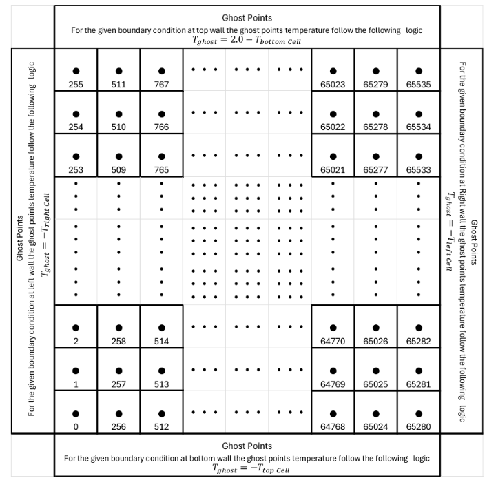
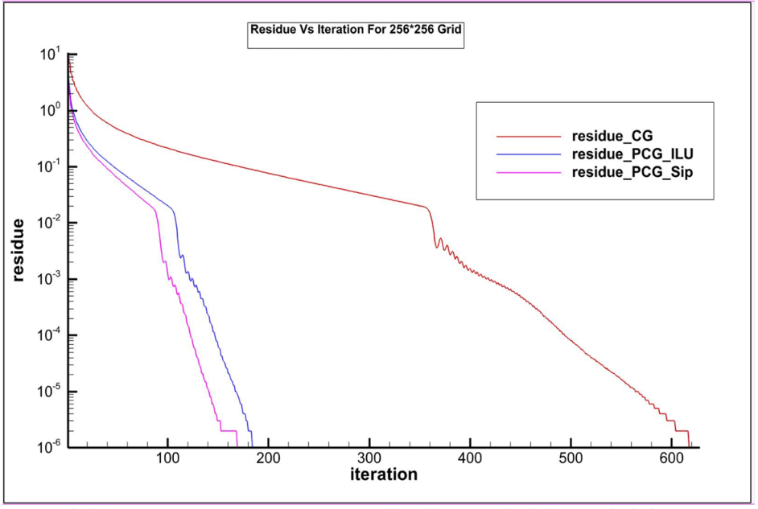
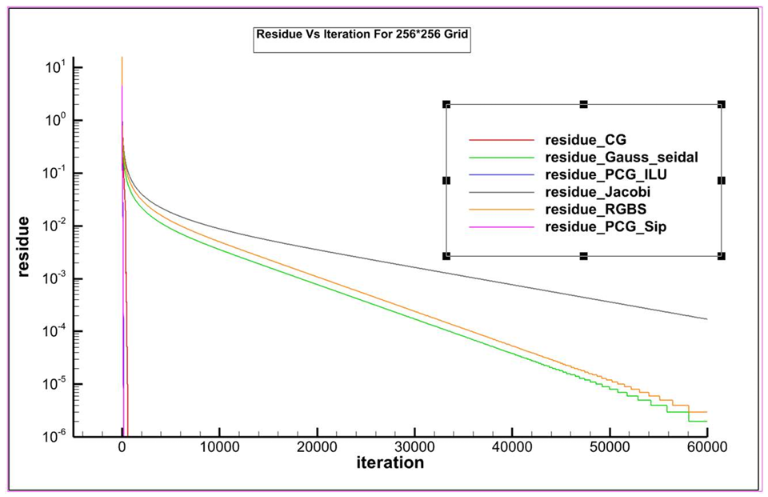

2D Heat Conduction Solvers & Parallelization
Engineered a comprehensive suite of numerical solvers to solve the 2D heat conduction equation on finite difference grids. The project heavily emphasized evaluating the computational efficiency of classical iterative solvers against advanced Preconditioned Conjugate Gradient (PCG) methods.
Discretization & Ghost Point Architecture
The domain was discretized using a high-resolution 256x256 finite difference grid. To properly enforce thermal boundary conditions without corrupting the interior domain calculations, a robust "ghost point" architecture was implemented.
Ghost cells flank the computational boundaries, dynamically updating their temperatures based on the adjacent interior cells. For example, the top wall enforces \( T_{ghost} = 2.0 - T_{bottom\_cell} \), ensuring precise gradient calculations at the domain edges.

Computational domain topology detailing ghost point logic for boundary condition enforcement.
Krylov Subspace Methods & Convergence
While foundational solvers (Jacobi, Gauss-Seidel, and Red-Black Gauss-Seidel) were implemented and parallelized using MPI and OpenMP, their convergence rates on dense grids proved computationally expensive.
To drastically reduce simulation turnaround times, the focus was shifted strictly to Krylov subspace methods. The implementation of the Conjugate Gradient (CG) algorithm triggered a massive performance jump, which was further optimized using ILU and SIP Preconditioning (PCG).


Convergence histories illustrating the aggressive residue decay of CG and PCG methods compared to classical solvers.
Computational Cost & Benchmarks
The benchmarking results on the 256x256 grid demonstrate the overwhelming superiority of preconditioned iterative methods for large-scale matrices.
By leveraging the SIP Preconditioned Conjugate Gradient method, the required iterations for convergence plummeted from over 128,000 (Jacobi) down to just 177, cutting the total CPU run time from nearly two minutes down to a fraction of a second.
Solver Performance (256x256 Grid)
| Iterative Method | CPU Time (s) | Iterations | Total Cost (Units) |
|---|---|---|---|
| Jacobi | 118.557 | 128,241 | 7.5e10 |
| Gauss-Seidel | 72.409 | 64,186 | 3.7e10 |
| Red-Black G.S. | 67.317 | 66,422 | - |
| Conjugate Gradient | 0.755 | 628 | 8.6e8 |
| PCG (ILU) | 0.382 | 189 | 3.7e8 |
| PCG (SIP) | 0.369 | 177 | 3.4e8 |
Hardware execution benchmarks highlighting a >320x reduction in total CPU run time.
Hardware Scaling: MPI vs. OpenMP
To evaluate parallel efficiency across distributed and shared memory architectures, the classical solvers were scaled up to 16 processors. Peak parallel efficiency was observed at 4 processors before communication overhead dominated.
Across both the 256x256 and 512x512 grids, the distributed memory model (MPI) consistently outperformed the shared memory model (OpenMP), yielding up to a 3.61x speed-up compared to OpenMP's ceiling of 2.38x.
Peak Speed-up Comparison (4 Processors)
| Solver | Grid Size | OpenMP | MPI |
|---|---|---|---|
| Jacobi | 256x256 | 1.99x | 3.59x |
| Gauss-Seidel | 256x256 | 2.38x | 3.61x |
| Red-Black G.S. | 256x256 | 1.91x | 3.49x |
| Jacobi | 512x512 | 1.83x | 3.14x |
| Gauss-Seidel | 512x512 | 2.18x | 2.88x |
| Red-Black G.S. | 512x512 | 1.89x | 2.87x |